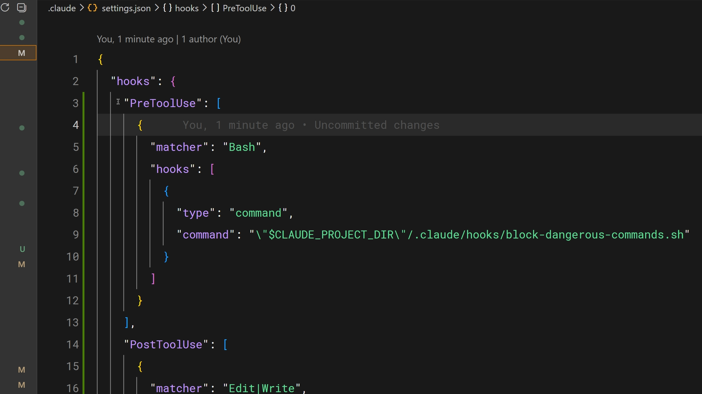

훅을 사용하면 Claude Code의 라이프사이클에서 특정 시점에 명령을 실행할 수 있습니다. 훅과 이 강좌에서 다룬 다른 모든 것의 핵심 차이점은 훅이 결정론적이라는 것입니다 — 항상 실행됩니다.
훅을 사용하는 이유
CLAUDE.md에서 Claude에게 파일을 편집할 때마다 Prettier를 실행하라고 지시할 수 있습니다. 대부분의 경우 실행할 것입니다. 하지만 가끔은 실행하지 않을 수도 있습니다. 훅을 사용하면 예외 없이 매번 실행되도록 보장할 수 있습니다.
일반적인 사용 사례는 다음과 같습니다:
- 파일 편집 후 자동 포매팅
- 규정 준수를 위한 모든 실행 명령 로깅
- 프로덕션 파일 수정과 같은 위험한 작업 차단
- Claude가 작업을 완료했을 때 알림 보내기
작동 방식
훅은 settings.json에서 설정합니다. 이벤트를 선택하고, 선택적으로 적용할 도구의 매처를 설정한 다음, 실행할 명령을 지정합니다. 사용 가능한 이벤트는 다음과 같습니다:
- PreToolUse — 도구 호출 전에 실행
- PostToolUse — 도구 호출 완료 후 실행
- UserPromptSubmit — 프롬프트를 제출할 때, Claude가 처리하기 전에 실행
- Stop — Claude가 응답을 완료할 때 실행
- Notification — Claude가 알림을 보낼 때 실행
Claude Code 내부의 /hooks 명령이나 settings.json을 직접 편집하여 설정할 수 있습니다.

실용적인 예시
가장 일반적인 훅: 편집 후 자동 포매팅입니다. PostToolUse 훅에 "Edit|MultiEdit|Write" 매처를 설정하면 Claude가 파일을 수정할 때마다 실행됩니다. 이 명령은 파일 확장자를 확인하고 적절한 포매터를 실행합니다 — TypeScript에는 Prettier, Go에는 gofmt 등 프로젝트에서 사용하는 포매터를 실행합니다.
PreToolUse로 차단하기
PreToolUse 훅은 도구 호출이 실행되기 전에 차단할 수 있습니다. 훅은 stdin을 통해 도구 이름과 입력을 JSON으로 수신합니다. 종료 코드에 따라 동작이 결정됩니다:
- 종료 코드 0 — 정상적으로 진행합니다.
- 종료 코드 2 — 작업을 차단합니다. stderr 메시지가 Claude에게 피드백으로 전달되어 차단된 이유를 알고 조정할 수 있습니다.
- 기타 종료 코드 — 차단하지 않는 오류로, 사용자에게 표시되지만 아무것도 중단하지 않습니다.
이것이 엄격한 규칙을 적용하는 방법입니다. 프로덕션 설정 디렉토리에 대한 쓰기를 차단합니다. rm -rf가 포함된 bash 명령을 차단합니다. main 브랜치에 대한 커밋을 차단합니다. 팀에서 제안이 아닌 보장이 필요한 모든 것에 적용할 수 있습니다.

팀과 훅 공유하기
.claude/settings.json에 설정된 훅은 프로젝트 수준이며 저장소에 커밋할 수 있습니다. 이렇게 하면 전체 팀이 자동으로 동일한 훅을 사용하게 됩니다. 명령에서 CLAUDE_PROJECT_DIR 환경 변수를 사용하여 프로젝트에 저장된 스크립트를 참조하면, Claude의 현재 작업 디렉토리와 관계없이 작동합니다.
요약
훅은 Claude Code의 동작에 대한 결정론적 제어를 제공합니다. 자동 포매팅과 로깅에는 PostToolUse를 사용하세요. 위험한 작업을 차단하려면 PreToolUse를 사용하세요. /hooks 명령이나 settings.json에서 설정하세요. 그리고 저장소에 커밋하여 팀 전체가 사용할 수 있도록 하세요.
매번 빠짐없이 실행되어야 하는 것이 있다면, 프롬프트에 넣지 마세요. 훅에 넣으세요.